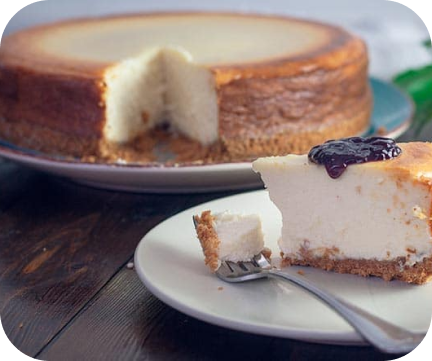

TARTA DE PHILADELPHIA
Bis Bistro
NIVEL FÁCIL / DURACIÓN 30'
Ingredientes
- 7 cucharadas de mantequilla.
- 2 paquetes de galletas para triturar.
- 2 tazas de queso philadelphia.
- C4 cucharadas de manteca.
- Brick y medio de nata de los de 250 ml
- 1/3 de taza de azúcar.
- 1 sobre de gelatina sin sabor.
- Mermelada de frutas o trozos de frutas para decorar.
Preparación
- Triturar las galletas para hacer la masa.
- Derretir la mantequilla.
- Mezclar los dos ingredientes anteriores en un recipiente.
- Una vez lograda una pasta homogénea, distribuir en el molde de la tarta y acomodar de tal forma que quede uniforme.
- Dejar que se enfríe la masa.
- Mezclar en una cacerola aparte la gelatina, la nata y el azúcar, mientras que se remueven a fuego lento, hasta lograr una crema homogénea, con los polvos bien diluidos.
- Añadir el queso philadelphia y mezclar hasta que esté totalmente integrado.
- Verter la crema sobre la basa de galletas trituradas. Acomodar de manera uniforme.
- Refrigerar por un tiempo mínimo de seis horas.
- Pasado este tiempo, desmoldar y cubrir con la mermelada y los frutos.